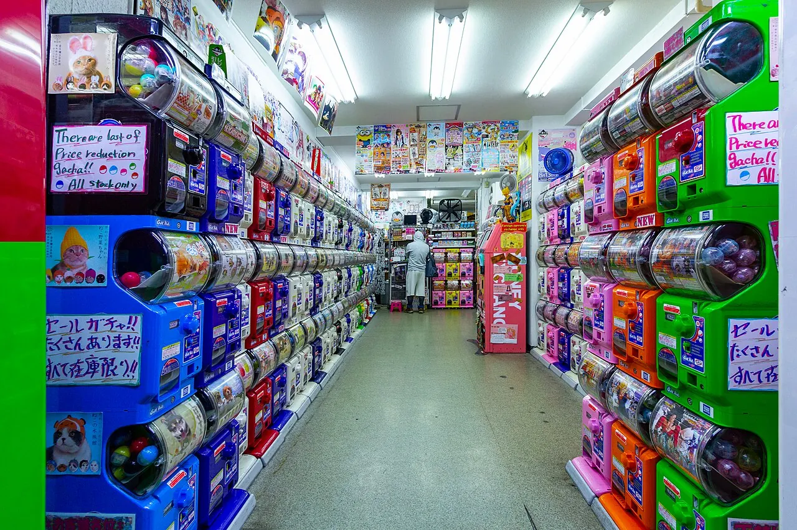

Items to look for
Fifteen souvenirs from Hoang Pham’s Japan shopping video, in the order they appear. Each timestamp opens the item in the video.
Start in Sakae for several shops in one building complex. In Tokyo Station you can look for cookies and train gifts. Save the Narita Terminal 2 shops for departure day if time allows.


-
Japanese snacks
1:02 in video ↗For pasalubong, look for regional Kit Kats, Bourbon Alfort chocolate biscuits or Yoku Moku cookie tins. The video also shows Tokyo Milk Cheese Factory biscuits and 7-Eleven pancake sandwiches.
-
Matcha powder
3:05 in video ↗Ippodo is the tea maker in the video. Ask for matcha powder if you want tea to whisk at home. You can check an Ippodo counter on your Sakae outing, even though the Kyoto shops in the video are outside your trip.
-
Japanese kitchen knives
4:30 in video ↗The featured specialist is Tower Knives in Osaka. The video also mentions its Tokyo shop and the kitchenware section at Don Quijote. Check the selection in Sakae if a cooking knife is on your list.
-
Personalized chopsticks
5:48 in video ↗The video shows shops that engrave names and points to shopping streets in Asakusa, Kyoto and Osaka. If a pair catches your eye, ask whether engraving is available and when it will be ready.
The video gives no engraving counter on your scheduled route.
-
Clear umbrellas
6:35 in video ↗Look for the see-through dome and curved handle near a convenience-store entrance. It’s an easy item to pick up if rain catches you on the walk from the hotel.
-
Japanese stationery
7:53 in video ↗Loft is the video’s pick for pens and other stationery. Try an erasable pen on the sample pad if there is one. Sakae Loft puts its stationery department on the fifth floor.
-
Skincare and sunscreen
8:55 in video ↗The gold ANESSA sunscreen bottle is one example from the video. Look in the beauty section at Don Quijote or a drugstore and check the product label for the formula you want.
-
Prescription glasses
10:23 in video ↗The creator names JINS, Zoff and OWNDAYS. If you need lenses fitted, ask for the total price and collection date before paying so pickup fits your trip.
-
Clothing and shoes
11:52 in video ↗UNIQLO and GU are the easy clothing stops in Sakae. The video features UNIQLO Ginza’s UTme! custom T-shirts and also mentions ASICS in Shibuya and Onitsuka Tiger in Ginza.
-
Suitcases
14:07 in video ↗The video compares Don Quijote with luggage specialists in Osaka and Akihabara. If you need an extra case, check its dimensions against your booked baggage allowance before buying.
-
Japanese nail clippers
15:40 in video ↗Look for KAI on the packaging. The creator found a compact pair at Don Quijote in Akihabara. Check the grooming shelves at the Sakae branch for the sizes it carries.
-
Capsule-toy keychains
16:30 in video ↗At #C-pla, the picture on each machine shows the possible prizes. Check the price and accepted coins before turning the handle. Your Sakaechika branch is already on the itinerary.
-
B-SIDE LABEL stickers
17:02 in video ↗Look for illustrator-designed stickers and luggage tags. Sakae Loft is a listed stockist. For a dedicated shop, there’s one in Osu and another before security at your departure terminal.
-
Train departure-melody player
17:37 in video ↗Press the button to hear a station tune. The creator shows a Yamanote Line version and names GENERAL STORE RAILYARD in Akihabara. Tokyo Station has a smaller detour for a related JR melody toy. What the real platform jingles mean.
-
ROYCE’ Nama Chocolate
18:52 in video ↗These soft chocolate squares need to stay cool. Ask the seller about a cold pack for your flight to Manila. The creator bought them at Haneda T3. At your airport, a shop near Narita T2 Gate 91 lists them.
Shop links point to optional stops on your itinerary. Branches carry different ranges, and stock can change.